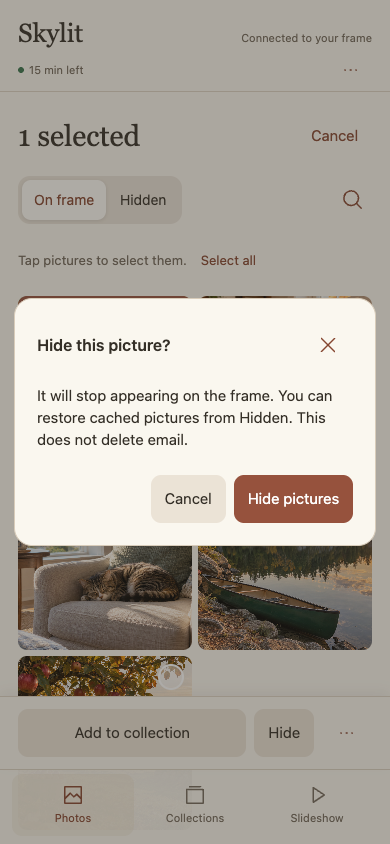
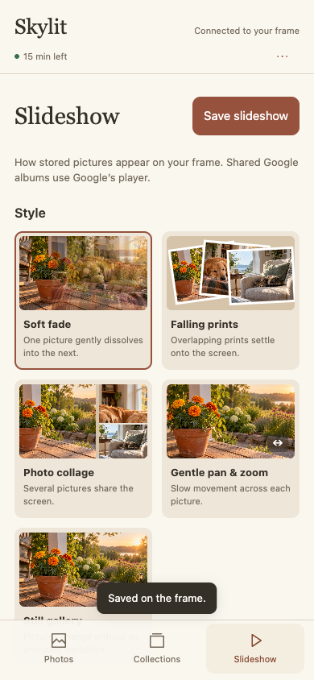
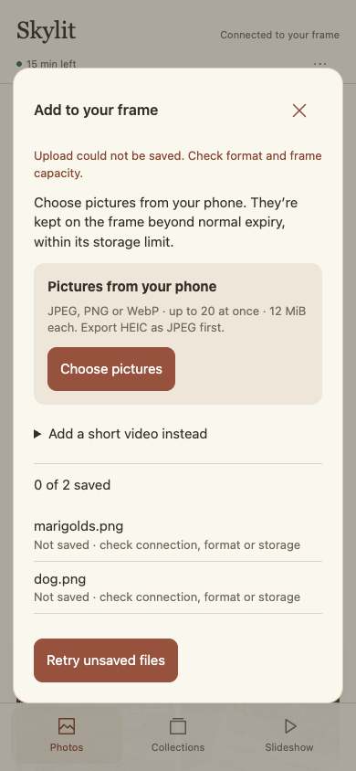
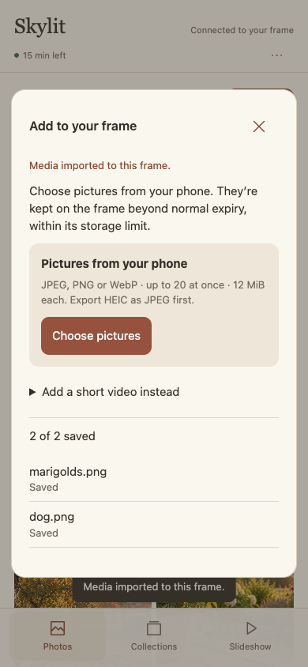
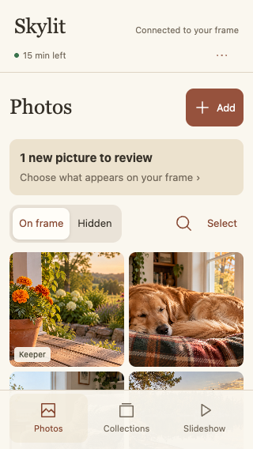
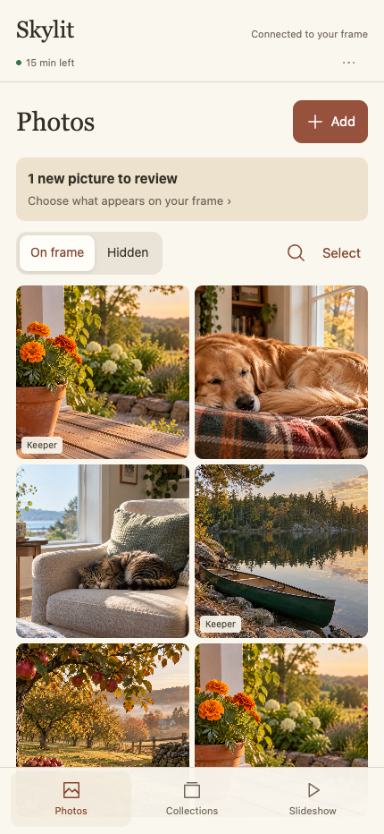

Skylit · Phone redesign · Before and afterSkylit · Phone implementation · October 13, 2026
A photo companion built around the pictures.
The approved design study is now implemented in the React phone interface: Photos, Collections and Slideshow, with focused editing, review and upload flows.
All screenshots use synthetic pictures and mocked local frame responses. The right-hand screens are the working React implementation, not the earlier design study. The paired frame was unavailable; real phone/TLS, Android upload and frame playback acceptance remain outstanding. This update has not been installed on the frame.
Original critique and design study · Workflow evidence
Photos come first
The library opens directly onto pictures. A compact connection line, Add action, arrival-review banner and On frame / Hidden choices replace the opening form. Search is available on demand. At 390 × 844, photos begin at approximately 320px instead of 525px.
Actions stay with the selection
Tap Select to choose pictures. The action bar stays above navigation with Add to collection, Hide or Restore, and More. The everyday gallery has no repeated Edit buttons or permanent selection checkboxes.
A real confirmation
Hide opens a focused dialog with Cancel and an explicit action. The dialog traps keyboard focus and can be dismissed with Escape. Hidden pictures remain restorable; this is not email deletion.
 Before · actual phone UI · synthetic data
Before · actual phone UI · synthetic data
After · implemented React interface · 390 × 844Edit the picture you can see
Open a thumbnail to see a large framing preview. Fit, Fill and Slideshow choices, direct crop dragging, keyboard arrows and Rotate replace blind framing controls. Secondary details and fine-tuning live in disclosures. Save is explicit; leaving unsaved edits asks whether to discard.
Collections are destinations
Named collections show a cover and their on-frame picture count. Open one to browse its existing membership. Create a group from a selection, add to an existing group, or remove selected pictures from a group. Favourites and Keepers use the actual frame state; they are not a second library.
One arrival, one decision
New arrivals open a dedicated review screen with the picture and Show on frame / Keep hidden actions together. Approval advances through the remaining pending pictures. Completing the queue has an explicit empty state.
Choose the appearance visually
The five styles have photo-based previews and short descriptions. Timing offers 10 seconds, 30 seconds, one minute or Custom. Playback source and order are separate decisions. Save stays at the top while scrolling. Drafts survive tab changes, polling and unrelated photo actions.
 Before · actual phone UI · synthetic data
Before · actual phone UI · synthetic data
After · implemented React interface · 390 × 844A focused Add flow
Add opens a focused dialog. Select up to 20 JPEG, PNG or WebP pictures; PNG/WebP convert to bounded JPEGs locally before upload. Files send sequentially with per-file results and retry for unsaved files. Muted H.264 MP4 clips retain the existing 30-second / 32 MiB limit.
Failure stays visible
A failed picture save leaves the editor and its values intact with visible feedback. Upload failures appear alongside their files. Pending requests cannot restore a cleared session. Successful actions have brief feedback rather than adding permanent status furniture.
Empty states explain what to do
No-results offers Clear search. An empty library offers Add pictures; empty collections explain how to add members; Hidden explains what will appear there. Selection actions are absent until there are selected pictures.
Connection has its own screen
The matching number is the primary decision, with approval still required on the frame. The phone removes the invitation fragment from its address. Connection help correctly points to Photos on the frame and retains certificate-verification guidance.
A clear end to temporary access
Remaining time is visible while connected. Expiry or a disconnected frame removes pictures, editor state, selection and dialogs. The reconnect instructions point to the current QR code in Photos. No account or calendar access is added.
Upload progress and recovery
Each file reports its own outcome. Retry sends only the files that did not save. Files already sent stay on the frame. An expired session clears the queue with the rest of the phone workspace.

Per-file failure, with retry
Both converted PNG pictures savedSmall and large phones
The two-column library remains usable at 320px. Larger phones gain larger previews. Desktop and frame-sized browser checks keep the phone interface bounded rather than stretching it into a dashboard.

320 × 568
430 × 932What was checked
- 93 Node tests and 19 Python tests pass; TypeScript and the Chrome 95-targeted build pass.
- The React integration and recovery suites pass: pairing before photo access, mutation allowlists, confirmation, draft preservation, edits during saves, external refresh, disconnect, expiry and late-response isolation.
- The phone workflow suite checks hide/restore, crop/rotation, failed saves, collection membership/creation, arrival review, slideshow persistence, upload conversion/retry, empty search and five viewport sizes.
- Source/history privacy scanning reports no findings. The normal APK uses empty household configuration and the existing signing key.
Deliberate limits
- HEIC is not converted here; export it as JPEG first. Each source image is limited to 12 MiB. Clip validation and playback still require native frame acceptance.
- Existing manual slideshow order is preserved. Reordering remains on the frame; the phone offers Newest, Oldest and Shuffle.
- The crop preview is a 4:3 working surface. Actual frame compositions can have different proportions; Fit preserves the whole image and Fill applies the saved focal position.
- The local certificate warning happens before this interface loads. Verification remains required; this redesign does not bypass browser or pairing security.
The native service endpoints and authorization model are unchanged. All phone styles remain self-contained so the existing bounded asset service can deliver the interface offline. The compiled phone bundle remains below its 256 KiB native bound.